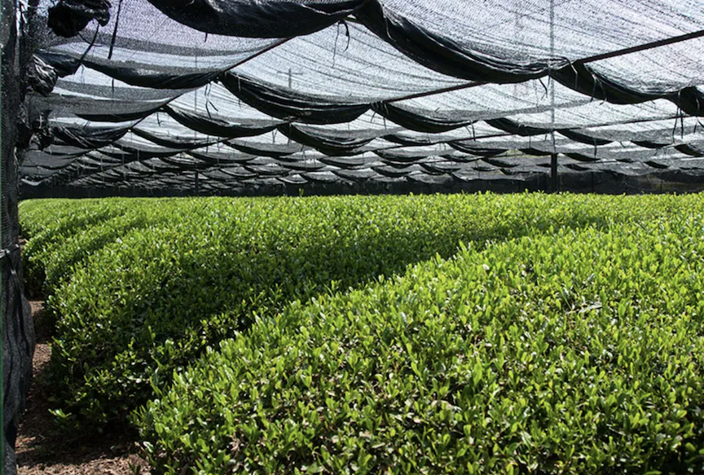
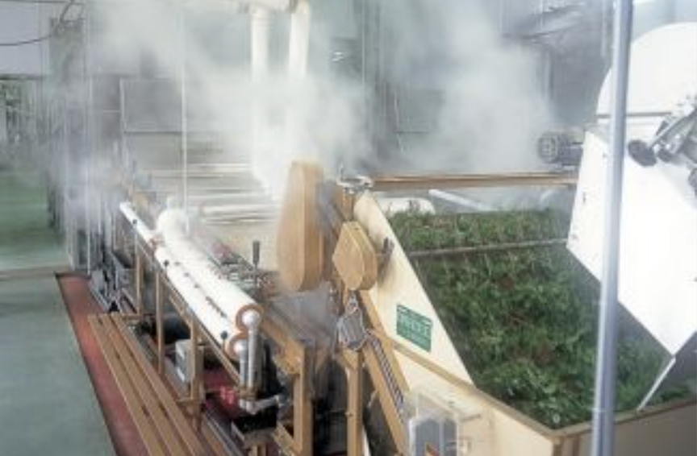
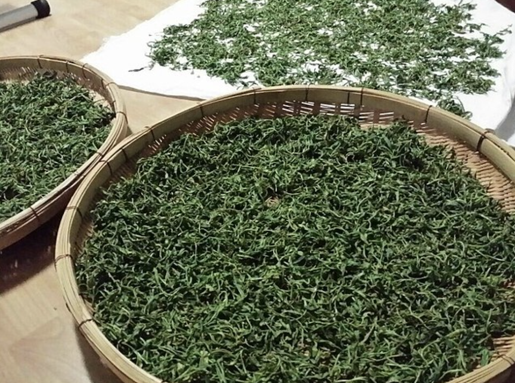
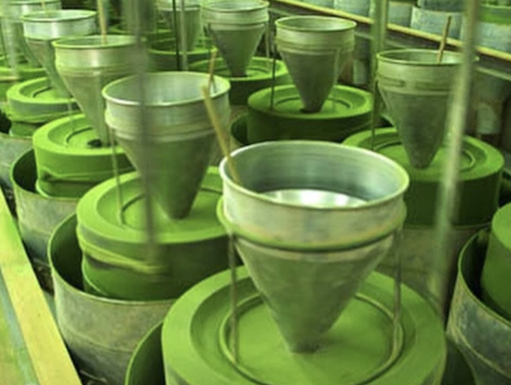
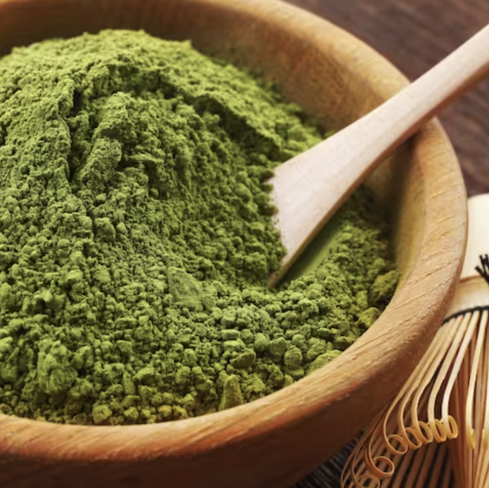

The process of making matcha is a meticulous and artful one, involving several key stages to produce the fine green powder that is beloved in tea ceremonies and various culinary applications.
Here’s an overview of how matcha is made
Cultivation: Matcha begins with the cultivation of tea leaves, specifically the Camellia sinensis variety. The quality of matcha largely depends on the conditions under which the tea is grown. About 3-4 weeks before harvest, the tea plants are shaded using special structures or cloths. This shading increases chlorophyll production and boosts the levels of amino acids, particularly L-theanine, which contributes to matcha’s unique flavor and vibrant green color.

Source: wikimedia.org
Harvesting: The leaves used for matcha are typically the youngest and most tender parts of the plant, known as the “first flush” or the top leaves of the plant. These leaves are carefully picked by hand to ensure only the finest leaves are selected.
Steaming: Immediately after harvesting, the leaves are steamed to halt oxidation. This step is crucial as it preserves the green color and fresh flavor of the leaves. Steaming also helps to soften the leaves, making them easier to process.

Source: www.matcha.my
Drying: After steaming, the leaves are dried to reduce moisture content. This drying process can be done using various methods, such as air drying or using specialized machines. The dried leaves are known as “tencha” at this stage.

Source: www.shizentea.com
De-stemming and De-veining: Once dried, the leaves are sorted to remove stems and veins. This ensures that only the pure leaf material is used for grinding, which contributes to the smooth, fine texture of high-quality matcha.
Grinding: The final and most critical step is grinding the tencha leaves into a fine powder. This is done using traditional stone mills, which carefully grind the leaves to a very fine consistency. Modern mills are also used, but stone mills are preferred for achieving the ideal texture and preserving the delicate flavors. The grinding process is slow and labor-intensive, as it ensures that the matcha remains cool and does not lose its flavor through heat.

Source: shellykongoherbs.com
Packaging: The freshly ground matcha is immediately packaged to protect it from light and air, which can degrade its quality over time. Matcha is typically stored in airtight containers and kept in a cool, dark place to maintain its freshness and vibrant color.

Source: www.spatuladesserts.com
Throughout this entire process, attention to detail and careful handling are essential to produce high-quality matcha. The result is a fine, vibrant green powder that is both rich in flavor and packed with nutrients.
{kind=link}